24900
原生输入18×16，固定20倍输出360×320，各模型均使用八方向融合。

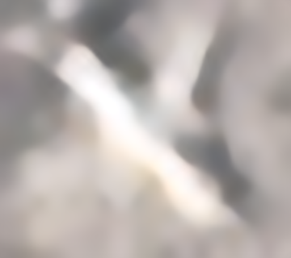
右侧为原模型；前后视野和显示尺寸相同。
输入与普通插值
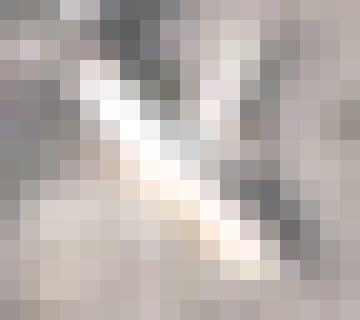
保留完整训练画面，等比例缩小后居中补边到400×400，再生成20×20输入。像素损失按有效区域加权，评估排除补边；没有拉伸飞机，也没有随机切掉机翼。A为干净双三次输入，B加入轻度模糊和噪声，LoRA使用B的数据。
三组均从原模型开始，训练480个原始来源，验证60个来源选权重，测试60个来源评估。这里的真实图对照是15张诊断样本，每个数据集5张，不能冒称全部公开数据重新运行完成。
A的两类测试平均增益约0.005dB，LoRA约0.010dB。B选回第0步，保留原模型。逐张查看15张原生飞机，未见明显的整机轮廓或细节改善，PlanesNet依旧模糊。
| 方案 | 选中步数 | 验证平均变化 / dB | 干净测试变化 / dB | 退化测试变化 / dB |
|---|---|---|---|---|
| 普通微调 | 500 | +0.00158 | -0.00585 | +0.01509 |
| 退化微调 | 0 | +0.00000 | +0.00000 | +0.00000 |
| 退化＋LoRA | 500 | +0.01097 | -0.03531 | +0.05571 |
以上是同一合成配对协议下相对原模型的变化；B的百万分之一量级差异来自数值计算。不能与上一轮960长边协议的绝对分数直接比较。真实原生图片没有对应高清真值，不报告PSNR或SSIM。
此轮仍未解决真实20像素小图的细节恢复问题，正在进一步研究输入信息量的影响。页面展示长边最多800像素，完整20倍输出保留在服务器。
Bob Hammell（rhammell）；PlanetScope 数据来源；CC BY-SA 4.0，衍生图遵循相应许可。
原生输入18×16，固定20倍输出360×320，各模型均使用八方向融合。

右侧为原模型；前后视野和显示尺寸相同。

原生输入20×20，固定20倍输出400×400，各模型均使用八方向融合。

右侧为原模型；前后视野和显示尺寸相同。

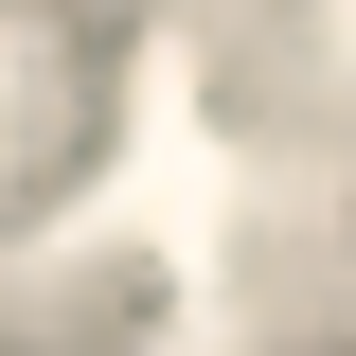
原生输入20×20，固定20倍输出400×400，各模型均使用八方向融合。

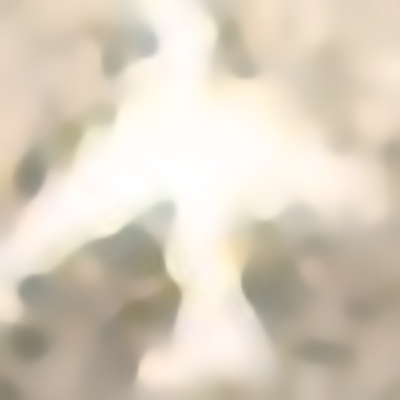
右侧为原模型；前后视野和显示尺寸相同。

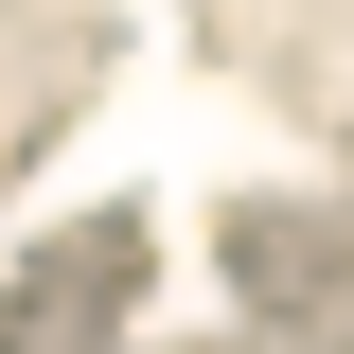
原生输入15×16，固定20倍输出300×320，各模型均使用八方向融合。
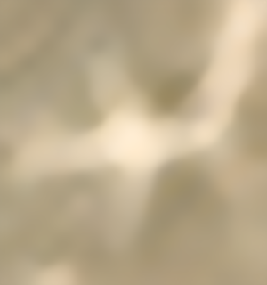
右侧为原模型；前后视野和显示尺寸相同。

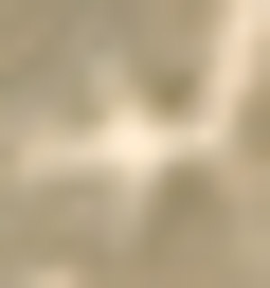
原生输入20×20，固定20倍输出400×400，各模型均使用八方向融合。

右侧为原模型；前后视野和显示尺寸相同。

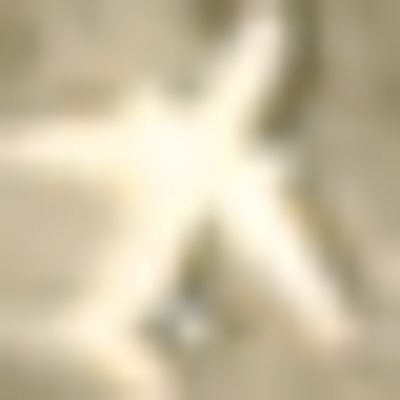
Gong Cheng、Junwei Han、Xiaoqiang Lu；Remote Sensing Image Scene Classification: Benchmark and State of the Art，Proceedings of the IEEE，2017。 数据来源；CC BY-NC 4.0，仅供非商业研究展示，衍生图遵循相应许可。
原生输入103×97，固定20倍输出2060×1940，各模型均使用八方向融合。

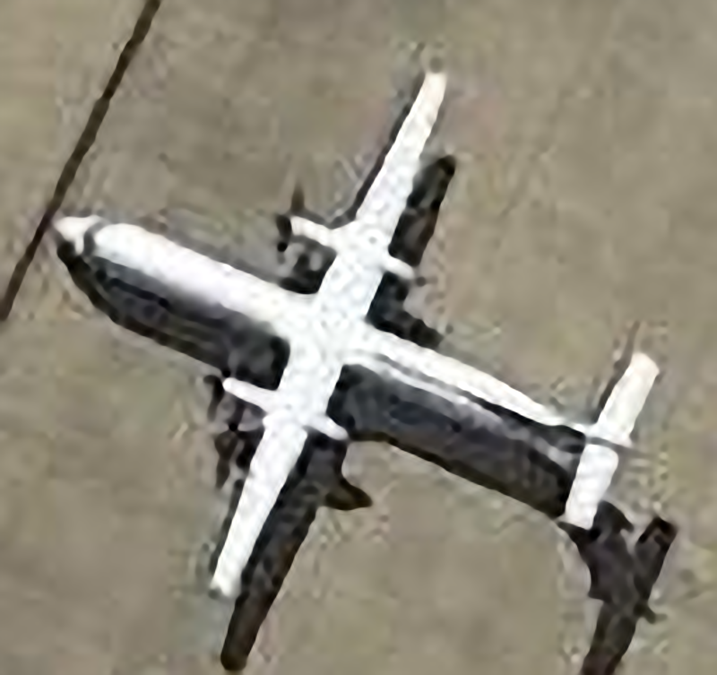
右侧为原模型；前后视野和显示尺寸相同。

原生输入89×81，固定20倍输出1780×1620，各模型均使用八方向融合。

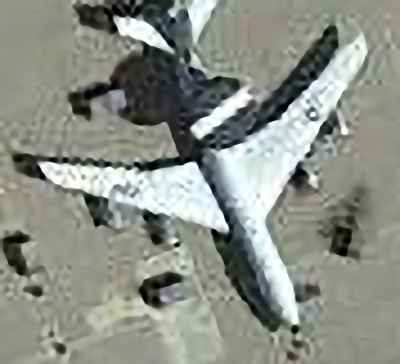
右侧为原模型；前后视野和显示尺寸相同。

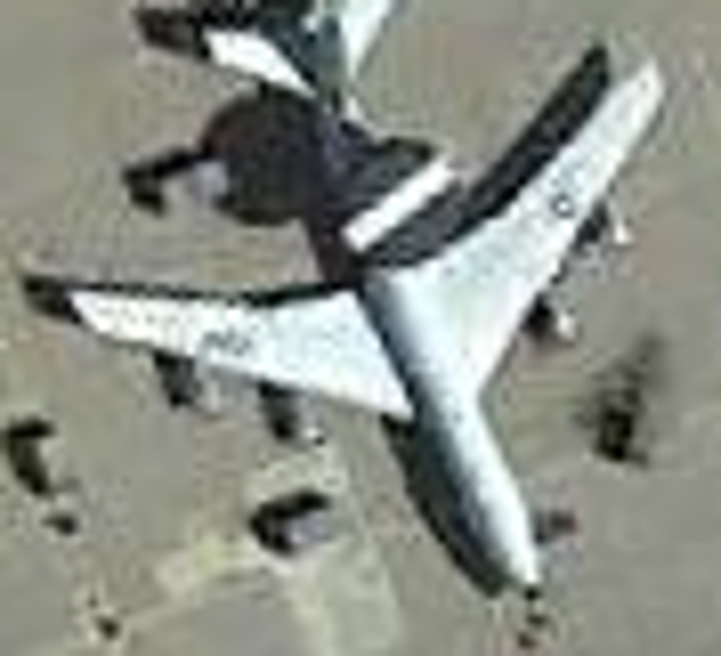
原生输入138×114，固定20倍输出2760×2280，各模型均使用八方向融合。

右侧为原模型；前后视野和显示尺寸相同。

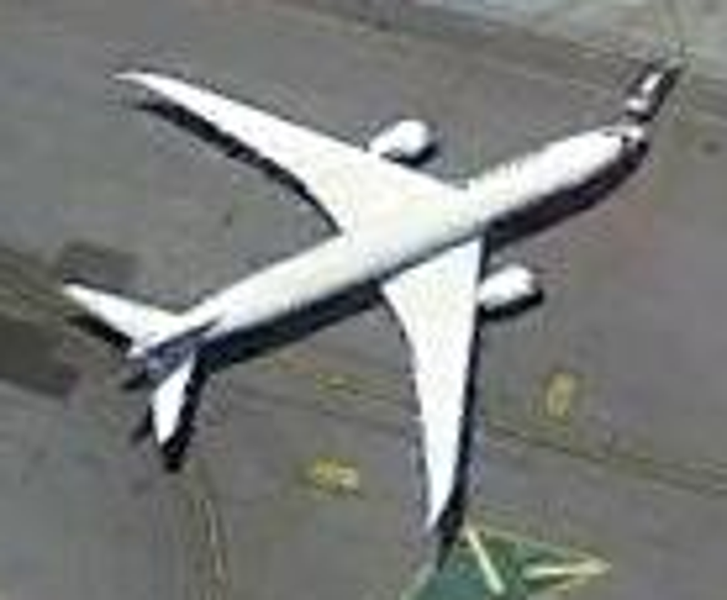
原生输入100×106，固定20倍输出2000×2120，各模型均使用八方向融合。

右侧为原模型；前后视野和显示尺寸相同。

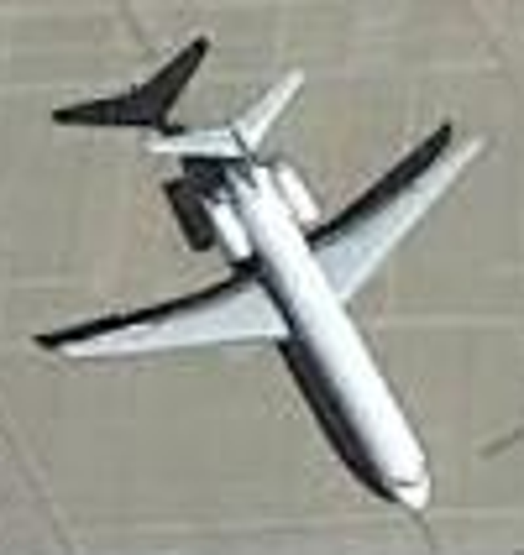
原生输入78×80，固定20倍输出1560×1600，各模型均使用八方向融合。

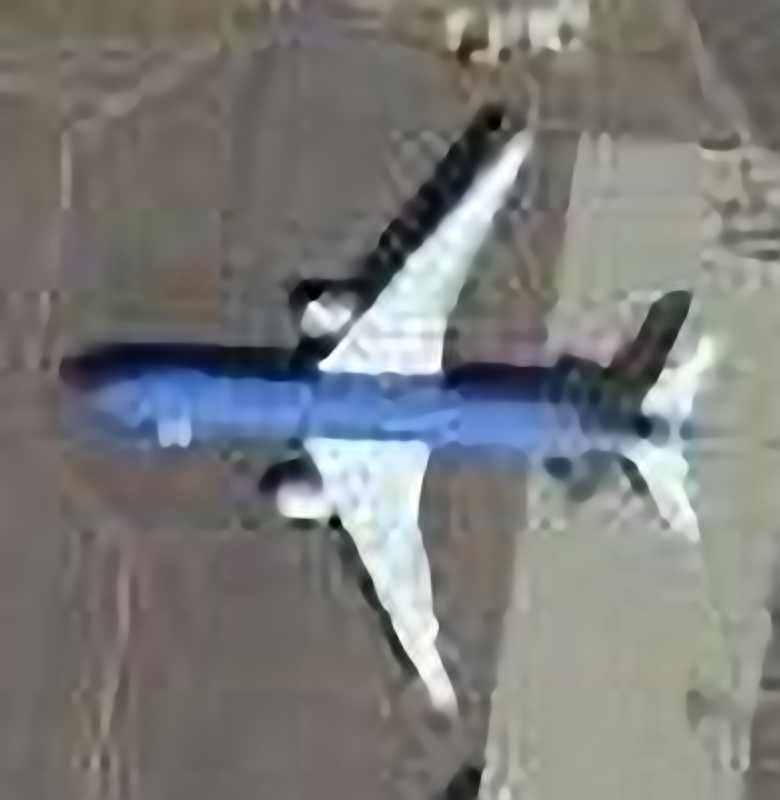
右侧为原模型；前后视野和显示尺寸相同。

CosmiQ Works 与 AI.Reverie；Jacob Shermeyer 等，RarePlanes: Synthetic Data Takes Flight，2020。真实影像来自 Maxar WorldView-3。2026-09-21 从 AWS Open Data 获取。 数据来源；CC BY-SA 4.0；本栏目中经超分、裁剪和缩略的衍生图片同样采用此许可，衍生图遵循相应许可。
原生输入77×29，固定20倍输出1540×580，各模型均使用八方向融合。
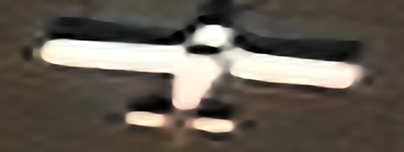
右侧为原模型；前后视野和显示尺寸相同。

原生输入78×69，固定20倍输出1560×1380，各模型均使用八方向融合。

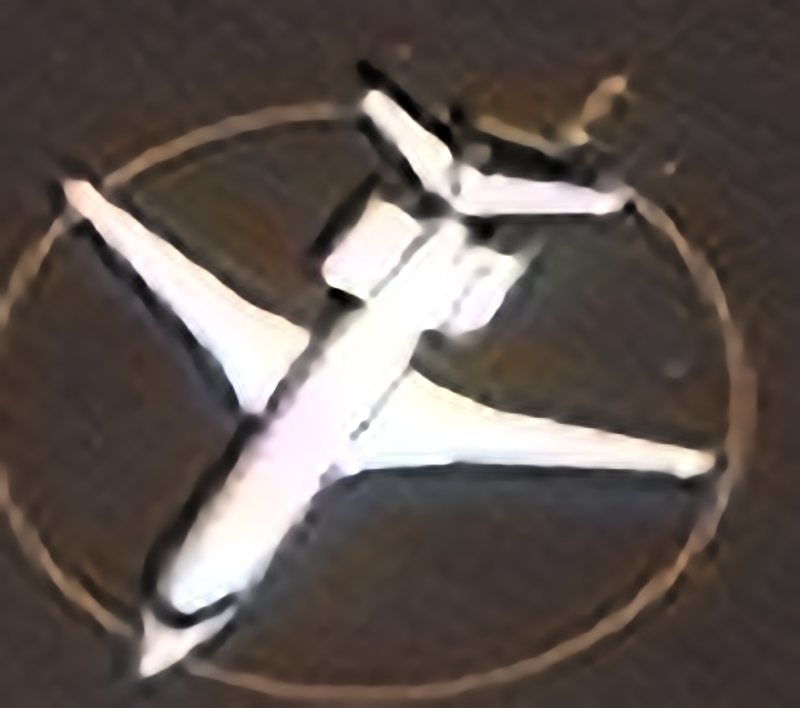
右侧为原模型；前后视野和显示尺寸相同。

原生输入167×181，固定20倍输出3340×3620，各模型均使用八方向融合。
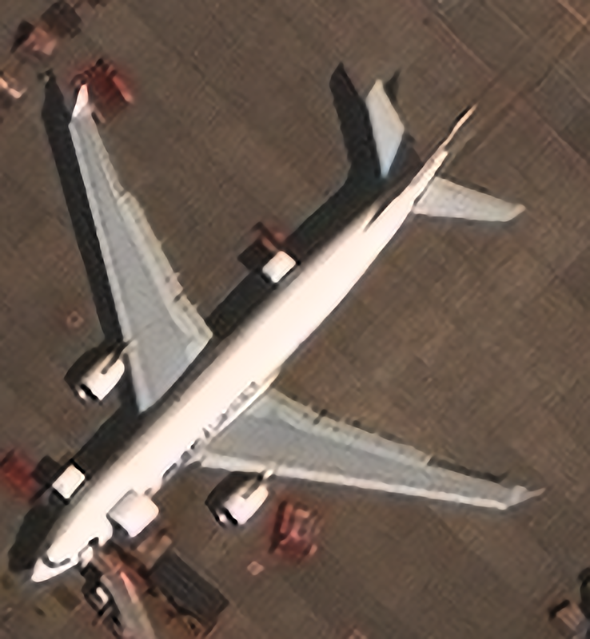
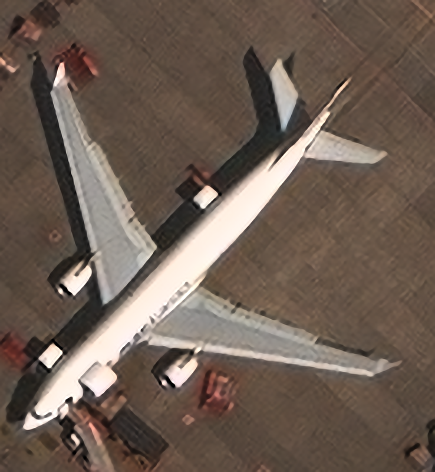
右侧为原模型；前后视野和显示尺寸相同。

原生输入173×159，固定20倍输出3460×3180，各模型均使用八方向融合。

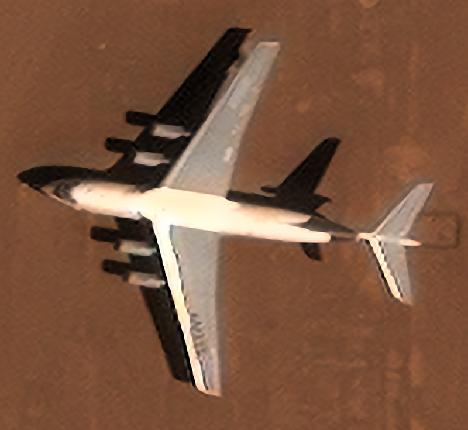
右侧为原模型；前后视野和显示尺寸相同。

原生输入250×229，固定20倍输出5000×4580，各模型均使用八方向融合。

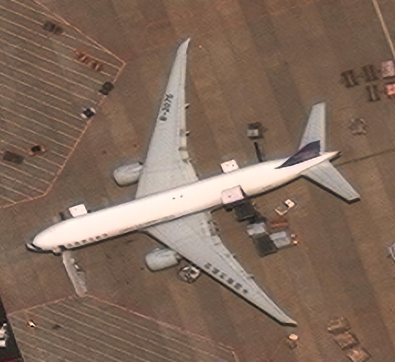
右侧为原模型；前后视野和显示尺寸相同。